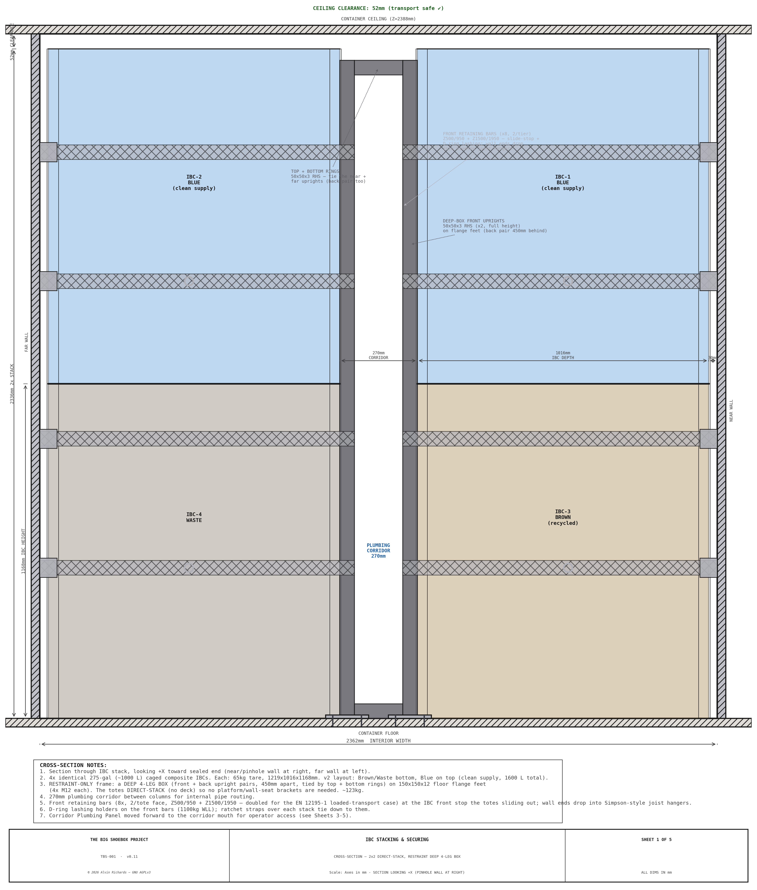
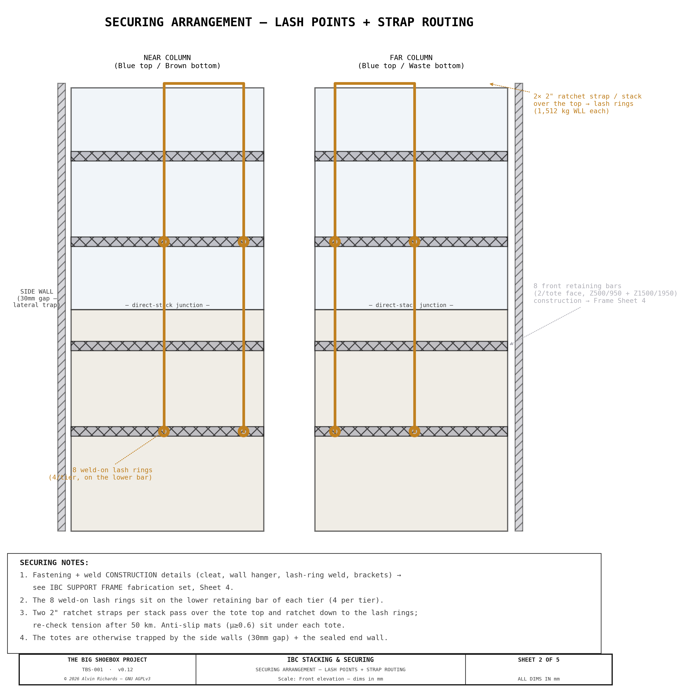
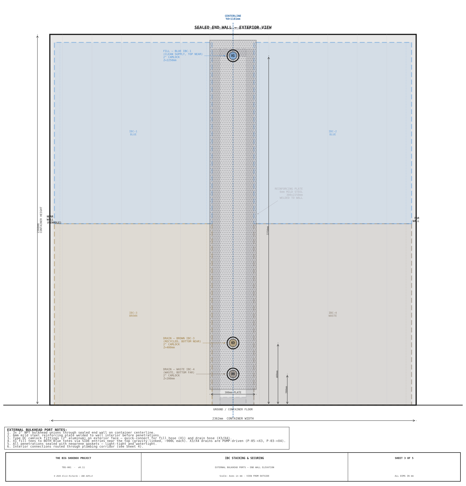
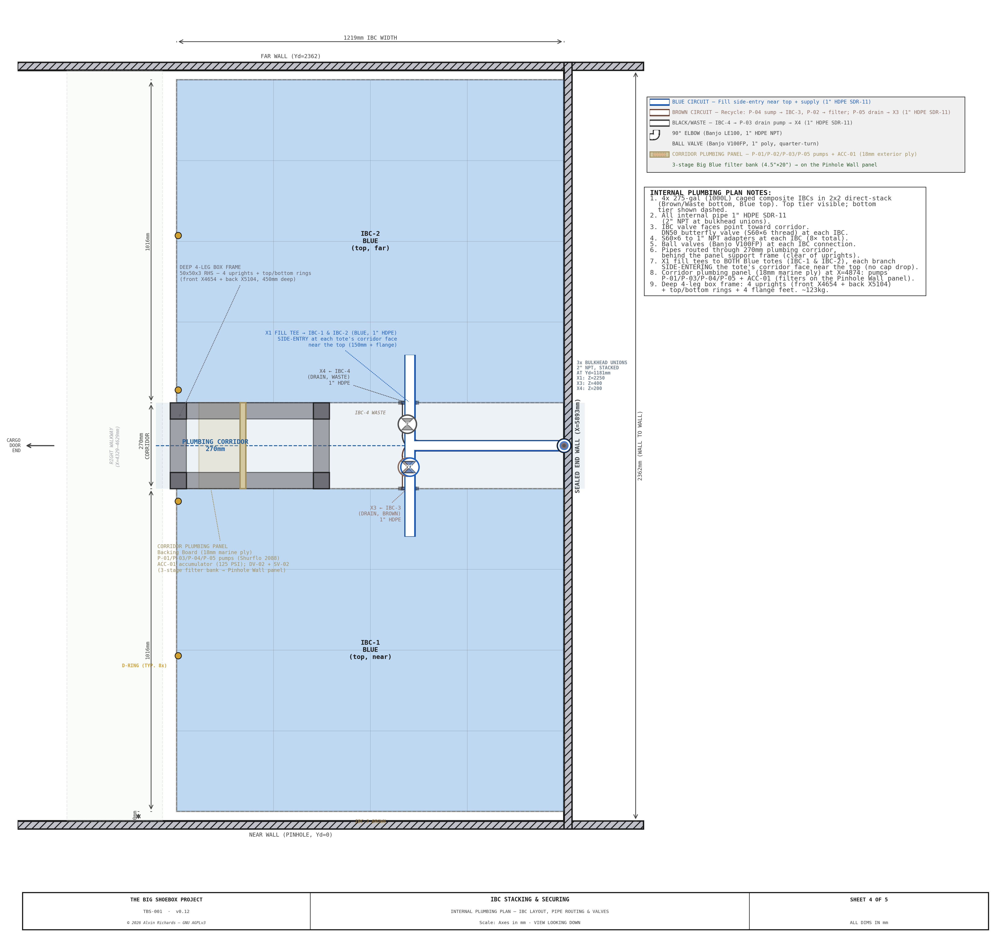
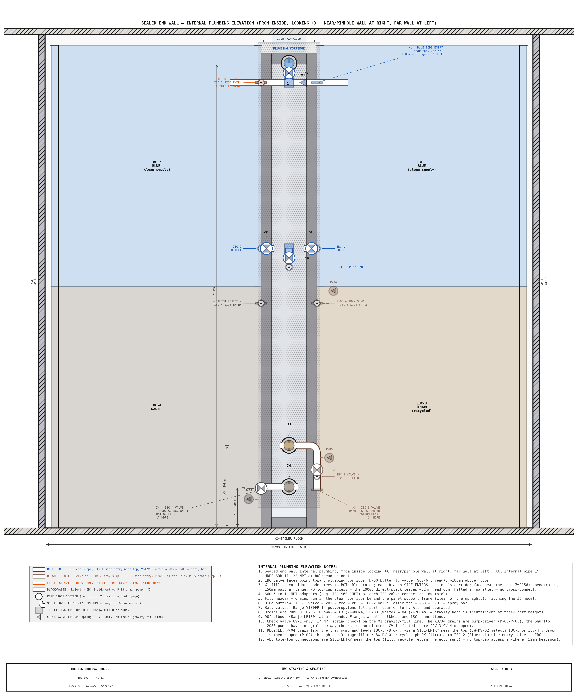
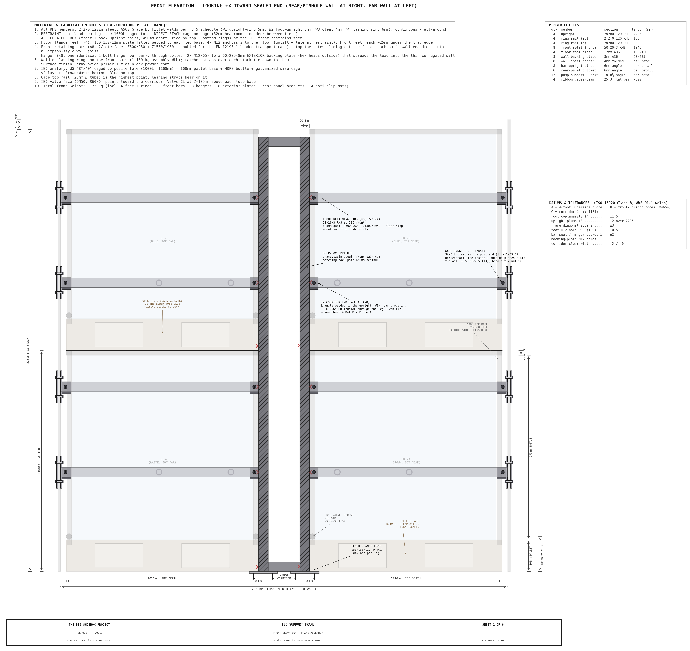
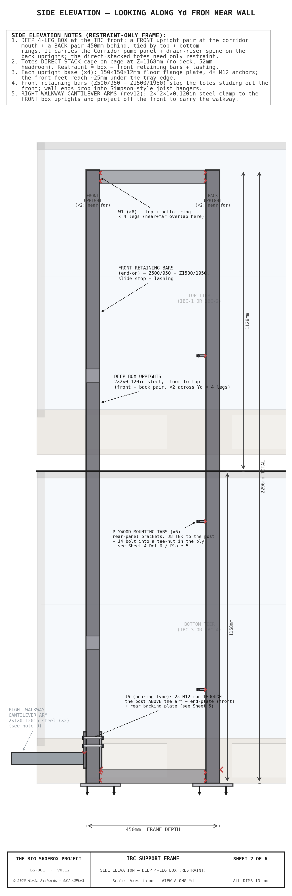
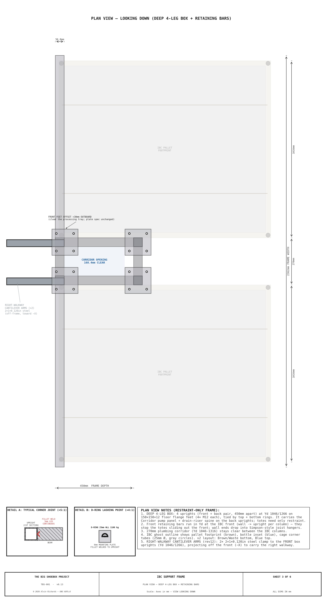

IBC Stacking System¶
1. Purpose¶
TBS-001's three-circuit water system requires four 1000 L caged composite totes arranged in a 2×2 stack in the right end zone (X=4674–5893mm) of the container. Two Blue supply totes (IBC-1 and IBC-2) sit on top; one Brown recycle tote (IBC-3) and one Waste tote (IBC-4) sit on the bottom. A welded mild steel restraint-only frame restrains all four direct-stacked totes for transport, and maintains a 270mm plumbing corridor between the near and far columns for internal pipe routing, valves, and the equipment panel.
Design goals:
- Restrain 4× 1000 L caged totes in a 2×2 direct-stack (2 columns × 2 tiers)
- Restrain all totes for road transport with D-ring lashing points
- Maintain a central plumbing corridor for pipe routing and valve access
- Enable external fill and drain without opening cargo doors
- Fit within the 2388mm container ceiling height with adequate clearance
Interactive 3D model — the four IBC totes, the welded stacking frame, and the plumbing corridor. Drag to orbit, scroll to zoom.
2. IBC Totes¶
2.1 Specification¶
| Parameter | Value |
|---|---|
| Model | Schütz Ecobulk MX 1000L (or equivalent US 48×40 caged composite tote) |
| Capacity | 1000 L (~264 US gal) per tote. "600 L" / "1000 L" are fill levels, not tote sizes — all four totes are identical (a 600 L caged tote does not exist) |
| Overall dimensions | 1,219 × 1016 × 1168mm (W × D × H) |
| Pallet format | US 48" × 40" composite |
| Pallet base height | 168mm (includes feet/runners) |
| Cage upright tube | Ø25mm |
| Cage top rail | 25mm OD |
| Drain valve | DN50 butterfly valve, S60×6 thread, at Z=185mm above IBC base |
| Fill | side entry near the top (no top-cap access — only 52mm headroom stacked) |
| Tare weight | ~65 kg per tote |
| Full weight (1000 L) | ~1,065 kg per tote |
| Total tare (4 totes) | ~260 kg; water load see weight-distribution report |
2.2 Tote Assignments¶
| Tote | Position | Circuit | Function |
|---|---|---|---|
| IBC-1 | Top tier, near column | Blue (clean supply) | Primary clean water supply for spray bar |
| IBC-2 | Top tier, far column | Blue (clean supply) | Secondary supply, filled in parallel with IBC-1 from the X1 fill tee |
| IBC-3 | Bottom tier, near column | Brown (recycled) | Wash water buffer — filtered and recycled back to Blue |
| IBC-4 | Bottom tier, far column | Black (waste) | Contaminated water sealed for off-site disposal |
2.3 Layout¶
| Parameter | Value |
|---|---|
| Near column Yd | 30–1046mm (pushed to near/pinhole wall, 30mm clearance) |
| Far column Yd | 1316–2332mm (pushed to far wall, 30mm clearance) |
| Column X range | 4674–5893mm (right-justified to sealed end wall) |
| Plumbing corridor | Yd=1046–1316mm (270mm gap between columns) |
| Single IBC height | 1168mm |
| Stacked height (2 totes, direct-stack cage-on-cage) | 2336mm (2 × 1168mm — no deck/mat between tiers) |
| Ceiling clearance | 52mm (2388 − 2336mm) — tight but transport-validated (see weight report) |
3. Stacking Frame — Restraint-Only Front Portal¶
3.1 General Arrangement¶
The 1000L caged totes direct-stack cage-on-cage — the upper tote's pallet base bears directly on the lower tote's cage top, leaving only 52mm of ceiling headroom. There is no room for (and no need for) a load-bearing platform deck between tiers, so the frame is restraint-only: it carries no vertical service load, it only keeps the totes from moving during transport.
The frame is a single front portal at the IBC front: two full-height 50×50×3 RHS uprights at the corridor edges (Yd 1046/1266) on floor flange feet. The deep mid/back corridor stations, platform cross-beams, X-bracing and wall seat brackets of the earlier load-bearing rack are dropped. Transport restraint is provided by:
- front retaining bars across each column at the IBC front (Z560 + Z1760) that stop the totes sliding out the open front, their wall ends dropped into Simpson-style joist hangers;
- D-ring lashing holders on the front bars, with ratchet straps over each stack;
- the totes are otherwise trapped by the container side walls (30mm gap) and sealed end wall.
The front portal also gives the right-walkway cantilever arms their clamp point and mounts the (forward) wet-end equipment panel.
3.2 Frame Specification¶
| Parameter | Value |
|---|---|
| Material | 50 × 50 × 3mm RHS mild steel (A500 Grade B) |
| Front-portal uprights | 2 full-height (Z 0–2296mm) at the IBC front (X≈4734), Yd 1046/1266 |
| Floor anchorage | 2 × 150 × 150 × 12mm flange-plate feet, 4 × M12 anchors each |
| Front retaining bars | 4 × 50×20×3 RHS at the IBC front (Z560 + Z1760, seated in the 25mm gap to the film rail), wall → upright per column |
| Wall joist hangers | 4 × Simpson-style U-pocket receiving the front-bar wall ends, through-bolted (4 × M12 each) to an exterior backing plate |
| Exterior backing plates | 4 × 100 × 135 × 8mm steel, on the outside of the container side walls (hex heads outside) — spread the totes' transport thrust into the thin corrugated wall so the bolts can't pull through |
| D-ring lashing | holders on the front bars, 1,100 kg WLL |
| Panel mount | the portal carries the forward wet-end panel + the right-walkway cantilever arms |
| Frame weight | ~178 kg (uprights + feet + front bars + hangers + exterior plates + panel mount) |
| Joints | Welded (fillet weld throughout) |
3.3 Direct-Stack Junction¶
The upper tote bears directly on the lower tote's galvanized cage top rail at Z=1168mm (no platform, mat or lip) — the totes' normal warehouse cage-on-cage stacking interface, rated for a full upper tote.
3.4 Structural Validation (restraint)¶
The frame carries no vertical service load (the totes stack on themselves), so there is no platform-beam bending case. The governing check is transport restraint: the front retaining bars + D-ring lashing must resist the totes' inertia under braking/cornering (loaded mass 4,924 kg, worst-case CG at Z=1,306mm — see the weight-distribution report).
- Front retaining bars (50×20×3 RHS) span wall→upright (~1,046mm) and take each tote's longitudinal (−X) thrust into the floor feet + wall hangers.
- Wall joist hangers receive the bar wall ends and are through-bolted (4 × M12) to a 100×135×8mm exterior backing plate on the outside of each side wall — the plate spreads the bolt load so the thin corrugated wall cannot pull through under the totes' thrust.
- D-ring lashing (1,100 kg WLL each) over each stack provides vertical tie-down and supplements lateral restraint; the totes are otherwise wall-trapped.
- Floor feet (150×150×12, 4 × M12 each) anchor the uprights against uplift and transfer the lateral loads into the slab.
4. Securing for Transport¶
4.1 D-Ring Lashing Points¶
| Parameter | Value |
|---|---|
| Quantity | 8 total (4 per tier) |
| Type | 25mm welded D-ring on 6mm mounting plate |
| Working load limit | 1,100 kg per ring |
| Mounting | Fillet-welded to corridor-facing frame uprights |
| Supplier | McMaster-Carr #3641T29 |
4.2 Ratchet Straps¶
| Parameter | Value |
|---|---|
| Type | 25mm ratchet strap |
| Working load limit | 1,100 kg |
| Routing | D-ring to D-ring, over IBC top, 1 strap per tier per side |
| Total straps | 4 (2 per tier) |
| Pre-transport | Tighten all straps; re-check tension after 50 km |
4.3 Wall Trapping¶
There is no anti-rotation lip (no platform). The direct-stacked totes are trapped laterally by the container side walls (30mm gap each side) and the sealed end wall; the front retaining bars + D-ring ratchet straps restrain the open (−X) front and provide vertical tie-down. Together these restrain both tiers in all six DOF.
5. Drain Valve Access¶
The bottom-tier drain valves (DN50 butterfly, corridor-facing at Z=185mm) are reached directly from the open corridor front — with the equipment panel moved forward and no load-bearing base frame, there are no removable access gates. The operator reaches in from the right walkway.
6. External Plumbing Panel¶
Three 2" NPT bulkhead unions penetrate the sealed end wall on the container centerline (Yd=1181mm), allowing external fill and drain without opening cargo doors.
6.1 Port Layout¶
| Port | Height (Z) | Circuit | Function |
|---|---|---|---|
| X1 | 2250mm | Blue | Fill — gravity feed; an internal tee (near X1) splits to a SIDE entry near the top of BOTH Blue totes (no top-cap access — 52mm headroom) |
| X3 | 400mm | Brown | Drain IBC-3 — bottom tier, near column |
| X4 | 200mm | Waste | Drain IBC-4 — bottom tier, far column |
6.2 Exterior Fittings¶
| Parameter | Value |
|---|---|
| Bulkhead type | 2" NPT bulkhead union |
| Exterior fittings | Type DC camlock (2" aluminum) — quick-connect for fill/drain hose |
| Reinforcing plate | 6mm mild steel, ~300mm wide, welded to wall interior before penetrations |
| Seal | Neoprene gasket — light-tight and watertight |
| IBC-2 fill | No dedicated external port — fed in parallel with IBC-1 from the internal X1 fill tee (one external hose still fills both) |
7. Internal Plumbing¶
7.1 Pipe Specification¶
| Parameter | Value |
|---|---|
| Material | 1" HDPE SDR-11 (33.4mm OD, 3mm wall) |
| Elbows | Banjo LE100, 1" HDPE NPT, 90° |
| Ball valves | Banjo V100FP, 1" full-port poly, quarter-turn |
| Fill tee | 1" HDPE equal tee (Banjo TEE100) behind the panel-frame top rail — splits X1 to both Blue totes |
7.2 Pipe Routing¶
All pipes route through the 270mm plumbing corridor between the near and far IBC columns. IBC valve faces point toward the corridor (DN50 butterfly valve, S60×6 thread).
| Pipe | Route | Notes |
|---|---|---|
| X1 fill (Blue) | End wall bulkhead → corridor → V1 ball valve → tee → side-entry into both IBC-1 & IBC-2 corridor faces near the top (Z=2156, 150mm + flange) | Gravity feed from Z=2250mm; fills both Blue totes in parallel. No top-cap access (~52mm headroom) |
| X3 drain (Brown) | IBC-3 DN50 valve → V3 ball valve → P-05 drain pump → corridor → end wall bulkhead X3 | Pumped — port at Z=400mm, gravity head insufficient |
| X4 drain (Waste) | IBC-4 DN50 valve → V4 ball valve → P-03 drain pump → corridor → end wall bulkhead X4 | Pumped — port at Z=200mm, evacuates residual below port |
| Recycle returns | All tote-top returns (sump→IBC-3, filter→IBC-2, reject→IBC-4) enter via side-entry near the top | No top-cap access — DV-01/DV-02 recycle loop unchanged |
7.3 Equipment Panel¶
An 18mm marine plywood panel spans across the IBC plumbing corridor (Yd=1046–1316mm) at X=4874mm — at the front (cargo-door) mouth of the corridor, where it bolts to the front-portal frame (see §3.2). All pumps, filters, accumulator, and diverter valves mount on the cargo-door (-X) face of this panel.
| Equipment | Specification |
|---|---|
| Pumps | P-01, P-02, P-03, P-04 — Shurflo 2088 (12V DC, 3.5 GPM, 45 PSI) |
| Accumulator | ACC-01 — 0.75 L (23.5 oz), 125 PSI |
| Filter unit | Purcooflow WHF2045B302 3-stage (F1: 5μ sediment, F2: KDF-55, F3: GAC carbon) |
| Panel size | 270 × ~1110mm (corridor width × working height) |
8. Engineering Drawings¶
Eight construction drawings cover the IBC system across two drawing sets:
IBC Stacking & Securing (5 sheets)¶
Sheet 1 — Cross-section elevation: 2-tier direct-stack, restraint front portal, front retaining bars + wall hangers, direct-stack junction, 52mm clearance

Sheet 2 — Fastening details: front-bar→upright cleat + lash eye, wall joist hanger, ratchet lashing over the stack

Sheet 3 — External plumbing panel: Sealed end wall elevation with 3× bulkhead ports

Sheet 4 — Internal plumbing plan view: IBC layout, pipe routing, valves, equipment panel

Sheet 5 — Internal plumbing elevation: Pipe routing from IBCs to bulkhead unions

IBC Support Frame Fabrication (3 sheets)¶
Sheet 1 — Front elevation: front portal uprights, floor feet, front retaining bars + wall hangers + D-ring holders, direct-stack junction

Sheet 2 — Side elevation: single front portal + front bars (end-on) + walkway cantilever arm

Sheet 3 — Plan view: front portal + retaining bars + floor feet + IBC footprints + corridor + walkway arms

Full drawings also appear in Engineering Diagrams §15 (stacking) and §17 (frame fabrication).
9. Parts List¶
9.1 Stacking Frame¶
| Item | Specification | Qty | Est. cost (USD) |
|---|---|---|---|
| 50 × 50 × 3mm RHS mild steel (6 m lengths) | Front-portal uprights + front retaining bars + panel-mount rail | 4 | $120–$180 |
| 12mm steel plate, 150 × 150 cut | Upright floor flange feet | 2 | $10–$20 |
| 4mm folded plate | Simpson-style wall joist hangers | 4 | $30–$50 |
| 25mm welded D-ring (McMaster #3641T29) | Lashing holders on the front bars, 6mm mount plates | 4 | $20–$35 |
| 25mm ratchet strap, 1,100 kg WLL | Transport securing, over each stack | 4 | $30–$50 |
| M12 floor anchor (wedge/sleeve, container floor) | Upright flange feet, 4 each | 8 | $15–$30 |
| M12 × 40 bolt, Grade 8.8 | Wall hangers (2 each) + front-bar cleats | 12 | $12–$22 |
| Welding / fabrication (frame assembly) | ~14–20 hrs labor (single front portal — much less than the old load-bearing rack) | 1 | $650–$950 |
| Primer + paint | Anti-corrosion coating | 1 | $30–$50 |
| Frame subtotal | $920–$1,390 |
9.2 External Plumbing Panel¶
| Item | Specification | Qty | Est. cost (USD) |
|---|---|---|---|
| 2" NPT bulkhead union | End wall penetrations | 3 | $45–$75 |
| 2" Type DC aluminum camlock | Exterior quick-connect fittings | 3 | $30–$50 |
| 6mm mild steel reinforcing plate (~300 × 2100mm) | Welded to wall interior | 1 | $40–$60 |
| Neoprene gaskets | Light-tight, watertight seal | 3 | $10–$15 |
| External plumbing subtotal | $125–$200 |
9.3 Internal Plumbing¶
| Item | Specification | Qty | Est. cost (USD) |
|---|---|---|---|
| 1" HDPE SDR-11 pipe (per meter) | Corridor pipe runs (~10 m total) | 10 m | $30–$50 |
| 2" HDPE pipe | Cross-connect IBC-1 ↔ IBC-2 (~2 m) | 2 m | $10–$20 |
| Banjo LE100 90° elbow (1" HDPE NPT) | Direction changes | 8 | $25–$40 |
| Banjo V100FP ball valve (1" full-port) | V1, V3, V4 isolation valves | 3 | $30–$45 |
| Hose clamps + fittings | IBC connections, bulkhead connections | 12 | $20–$30 |
| Internal plumbing subtotal | $115–$185 |
9.4 IBC Totes¶
| Item | Specification | Qty | Est. cost (USD) |
|---|---|---|---|
| 1000 L caged composite IBC tote (Schütz Ecobulk MX 1000 or equiv.) | New or reconditioned US 48×40 caged composite (~65 kg) | 4 | $300–$900 |
| IBC subtotal | $300–$900 |
9.5 Cost Summary¶
| Assembly | Low estimate | High estimate |
|---|---|---|
| Stacking frame (restraint front portal) | $920 | $1,390 |
| External plumbing panel | $125 | $200 |
| Internal plumbing | $115 | $185 |
| IBC totes (4×) | $300 | $900 |
| Total | $1,460 | $2,675 |
10. Maintenance Schedule¶
| Interval | Task |
|---|---|
| Every use | Visually inspect ratchet strap tension before transport |
| Every 10 prints | Inspect IBC valve seals (DN50 butterfly) for drips; tighten or replace O-ring |
| Every 10 prints | Check external camlock fittings for cross-threading; clean dust caps |
| Every 25 prints | Replace F-1 sediment cartridge (5μ melt-blown PP) |
| Every 20 prints | Replace F-3 GAC carbon block cartridge |
| Every 30 prints | Replace F-2 KDF-55 heavy metal cartridge |
| Every 6 months | Inspect D-ring welds for cracking; load-test straps |
| Every 6 months | Inspect D-ring holders + ratchet straps for wear; re-tension straps |
| Annually | Inspect frame welds (all joints) for fatigue cracking |
| Annually | Touch up paint on frame where chipped or rusted |
| Annually | Inspect front-bar/wall-hanger bolts and upright floor-anchor bolts for loosening; re-torque to spec |
| Annually | Flush all internal pipes with clean water; inspect for biofilm |
| As needed | Replace camlock gaskets if leaking |
| As needed | Clean IBC interiors between circuit changes (bleach rinse + water flush) |
11. Sources¶
| Item | Source |
|---|---|
| Schutz Ecobulk MX 640 L IBC | Schutz GmbH product catalog — US 48×40 composite tote, DN50 valve, UN31HA1/Y |
| D-ring lashing point | McMaster-Carr #3641T29 — 25mm, 1,100 kg WLL |
| Banjo V100FP ball valve | Banjo Corp catalog — 1" full-port polypropylene, quarter-turn |
| Banjo LE100 90° elbow | Banjo Corp catalog — 1" HDPE NPT |
| HDPE SDR-11 pipe | Standard 1" IPS — PE4710 resin, 200 PSI rated |
| Type DC camlock fitting | 2" aluminum, MIL-C-27487 spec |
| Shurflo 2088 pump | Pentair Shurflo catalog — 12V DC, 3.5 GPM, 45 PSI, self-priming diaphragm |
| Water system architecture | Water System Report §3 |
| IBC layout and stacking | Equipment Layout Report §5 |
| Frame fabrication drawings | Engineering Diagrams §15, §17 |
| Equipment panel specification | Engineering Diagrams §18 |
© 2026 Alvin Richards — Released under GNU AGPLv3